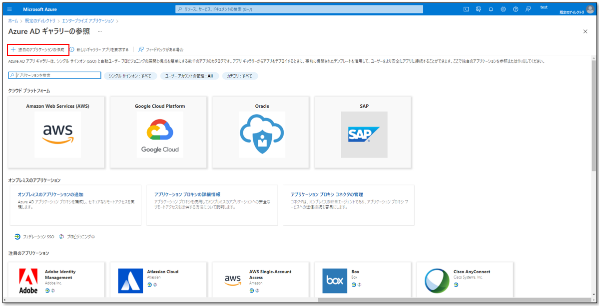

2021年にOCIの新しい認証基盤としてOCI IAM Identity Domainsが登場しました。Identity DomainsはOCIのIAMサービスに代わりOCIへのユーザーの認証・認可の役割と、OCIのIdentity Cloud Serviceで提供していた他サービスとの認証連携の機能を提供しています。 本チュートリアルではSAMLによるOCI IAM Identity DomainsとAzure ADとの認証連携（外部IDP連携）を設定する手順を紹介します。Azure ADはMicrosoft社が提供するクラウドベースのIDおよびアクセス管理サービスです。本チュートリアルを完了することでAzure ADにサインオンするだけでOCIにもサインオンが可能になります。
所要時間 : 60分
前提条件 : 対象 Azure AD は構築済みとします。
注意 :
- ※チュートリアル内の画面ショットについてはOracle Cloud Infrastructureの現在のコンソール画面と異なっている場合があります。
1. OCI IAM Identity DomainsのSAMLメタデータダウンロード
OCI IAM Identity DomainsにてSMALメタデータをダウンロードします。 OCIのログイン画面でクラウド・アカウント名を入力します。 Select an identity domain to sign inのドロップダウンボックスから「Default」を選択し「Next」ボタンをクリックします。 ログイン画面でOCIテナント管理者のユーザー名とパスワードを入力してサインインします。
OCI コンソール画面左上のメニューより「アイデンティティとセキュリティ」→「アイデンティティ」を選択します。
 アイデンティティ画面にて、「ドメイン」を選択し、ドメインを作成したいコンパートメントを指定し、ドメインを選択します。（今回は「Tutorial」ドメインを選択します。）※自身で作成したIdentity Domain（ドメイン）に設定する場合にはその該当ドメインを選択します。
ドメインURLをコピーし控えておきます。（※このURLは後続の手順で利用します。）
アイデンティティ・ドメイン画面にて左のメニューから「設定」を選択します。設定画面にて、署名証明書へのアクセス部分の「クライアント・アクセスの構成」をチェックし、「変更の保存」 を選択します。
ブラウザにて下記のURLにアクセスし、SAMLメタデータをダウンロードし、適当な場所に保存します。
(https://{Identity DomainのURL（先ほど控えたURL）}/fed/v1/metadata)
アイデンティティ画面にて、「ドメイン」を選択し、ドメインを作成したいコンパートメントを指定し、ドメインを選択します。（今回は「Tutorial」ドメインを選択します。）※自身で作成したIdentity Domain（ドメイン）に設定する場合にはその該当ドメインを選択します。
ドメインURLをコピーし控えておきます。（※このURLは後続の手順で利用します。）
アイデンティティ・ドメイン画面にて左のメニューから「設定」を選択します。設定画面にて、署名証明書へのアクセス部分の「クライアント・アクセスの構成」をチェックし、「変更の保存」 を選択します。
ブラウザにて下記のURLにアクセスし、SAMLメタデータをダウンロードし、適当な場所に保存します。
(https://{Identity DomainのURL（先ほど控えたURL）}/fed/v1/metadata)
3.Azure AD側でのサービス・プロバイダの登録
Azure AD側でのサービス・プロバイダの登録をします。 Azure ポータル（ https://portal.azure.com ）にアクセスします。 マイクロソフト サインイン画面にて、Azure AD 管理者のIDとパスワードを入力し、「サインイン」を選択し、Azureポータルにログインします。 Azure ポータル画面で Azure Active Directory を選択します。 画面に Azure Active Directory が表示されていない場合は左メニューもしくは、検索し、Azure Active Directory を指定します。 Azure Active Directory 概要画面にて、左メニューから「エンタープライズアプリケーション」を選択します。 エンタープライズアプリケーション画面にて、「新しいアプリケーション」 を選択します。 Azure AD ギャラリーの参照にて、「独自のアプリケーションの作成」を選択します。  独自のアプリケーションの作成画面にて、「お使いのアプリの名前は何ですか？」に適当な名前（今回はOracle IAM）を設定し、「作成」を選択します。 作成された エンタープライズアプリ画面の Getting Started から 「2.シングルサインオンの設定」 を選択します。 シングルサインオン画面にて、「SAML」を選択します。 SAMLベースのサインオン画面にて、「メタデータファイルをアップロードする」を選択します。 ファイル選択部分にて先ほどダウンロードした OCI IAM のSAML メタデータファイルを指定し「追加」を選択します。 基本的な SAML 構成 画面が開きます。 基本的な SAML 構成 画面にて、「保存」を選択し、「×」を選択し画面を閉じます。 属性とクレームの「編集」を選択します。 属性とクレーム画面にて、クレーム名「一意のユーザー識別子（名前 ID）」を選択します。 要求の管理画面にて、名前識別子の形式を「永続的」に変更します。 ソース属性が「user.userprincipalname」になっていることを確認し「保存」を選択し、この画面を閉じます。 SAMLベースのサインオン画面にて、フェデレーションメタデータXMLの「ダウンロード」を選択し、メタデータをダウンロードし、適当な場所に保存します。※このメタデータは後続の手順で利用します。 認証に使用するユーザーを作成します。AzureポータルのAzure Active Directory概要画面にて「ユーザー」を選択します。 「新しいユーザー」を選択します。 ユーザーの作成画面にて、以下の情報を記載し、「作成」を選択します。
ユーザー名- 任意名前- 任意 作成したユーザーを、作成したアプリケーションに割り当てます。Azure Active Directory概要画面にて、左メニューから「エンタープライズアプリケーション」 を選択します。 すべてのアプリケーション画面にて、作成した アプリケーションを選択します。 作成したアプリケーショーンの画面の左メニューから「ユーザーとグループ」を選択し、「ユーザーまたはグループの追加」を選択します。 割り当ての追加画面にて、ユーザー部分の「選択されていません」を選択し、右側ペインより作成したユーザーを選択し「選択」を選択します。
割り当ての追加画面にて、ユーザー部分の「選択されていません」を選択し、右側ペインより作成したユーザーを選択し「選択」を選択します。
 割り当ての追加画面にて、「割り当て」を選択します。
割り当ての追加画面にて、「割り当て」を選択します。

4.OCI IAM Identity Domains 側でのアイデンティティ・プロバイダの登録
OCI コンソール画面にて、左メニューより 「アイデンティティとセキュリティ」→「アイデンティティ」 を選択します。
 アイデンティティ画面にて、「ドメイン」を選択し、ドメインを作成したいコンパートメントを指定し、ドメインを選択します。
（今回は「Tutorial」ドメインを選択します。）※自身で作成したIdentity Domain（ドメイン）に設定する場合にはその該当ドメインを選択します。
アイデンティティ・ドメイン画面にて、左メニューより、「セキュリティ」を選択します。
セキュリティ画面にて、左メニューより、「アイデンティティ・プロバイダ」を選択し、IdPの追加より「SAML IdPの追加」を選択します。
SAMLアイデンティティ・プロバイダの追加画面にて、名前、説明に適当な値を入力し、「次」を選択します。
IdPの構成にて、Azure AD側でのサービス・プロバイダの登録にてダウンロードしたメタデータをアップロードし、「次」を選択します。
マップ属性にて、各項目に下記内容を指定し「IdPの作成」を選択します。
アイデンティティ画面にて、「ドメイン」を選択し、ドメインを作成したいコンパートメントを指定し、ドメインを選択します。
（今回は「Tutorial」ドメインを選択します。）※自身で作成したIdentity Domain（ドメイン）に設定する場合にはその該当ドメインを選択します。
アイデンティティ・ドメイン画面にて、左メニューより、「セキュリティ」を選択します。
セキュリティ画面にて、左メニューより、「アイデンティティ・プロバイダ」を選択し、IdPの追加より「SAML IdPの追加」を選択します。
SAMLアイデンティティ・プロバイダの追加画面にて、名前、説明に適当な値を入力し、「次」を選択します。
IdPの構成にて、Azure AD側でのサービス・プロバイダの登録にてダウンロードしたメタデータをアップロードし、「次」を選択します。
マップ属性にて、各項目に下記内容を指定し「IdPの作成」を選択します。リクエストされた 名前IDフォーマット- 永続アイデンティティ・プロバイダ・ユーザー属性：- SAMLアサーション名IDアイデンティティ・ドメイン・ユーザー属性- ユーザー名
5.OCI IAM Identity Domains側でのアイデンティティ・プロバイダのアクティブ化
OCI IAM Identity Domains側でのアイデンティティ・プロバイダのアクティブ化をします。 Azure AD側でのサービス・プロバイダの登録にてAzure AD上で作成したユーザーと同一のユーザーをOCI IAM Identity Domains側で作成します。 アイデンティティ・ドメイン画面にて、左メニューから「ユーザー」を選択し、「ユーザーの作成」を選択します。 ユーザー名が Azure AD属性のユーザープリンシパル名と同一になるように値を入力し、「作成」を選択します。 ユーザー作成画面にてAzure AD 属性：ユーザープリンシパル名とOCI IAM 属性：ユーザー名が同じ値になるようにします。 アイデンティティ・ドメイン画面の左メニューから「セキュリティ」を選択します。 セキュリティ画面にてアイデンティティ・プロバイダを選択し、作成したアイデンティティプロバイダの右のマークを選択し、「IdPのアクティブ化」を選択します。 アイデンティティ・プロバイダのアクティブ化の確認にて「IdP のアクティブ化」を選択します。 OCIコンソールにログインする際、作成したアイデンティティプロバイダ（ Azure AD ）をIdPとして利用できるようにするためIdP ポリシーの定義を行います。 セキュリティ画面の左メニューから「IdP ポリシー」を選択し、「Default Identity Provider Policy」を選択します。 Default Identity Provider Policy画面にて、「IdP ルールの追加」を選択します。 アイデンティティ・プロバイダ・ルールの追加画面にて、ルール名に適当な値を指定し、アイデンティティ・プロバイダの割当て部分にて今回、作成したアイデンティティプロバイダ（Azure AD）と「Username-Password」を選択し、「IdP ルールの追加」を選択します。 作成したルールを適用するために優先度を変更します。 優先度を変更するには「優先度の編集」を選択します。 IdP ルール優先度の編集画面にて、左側の優先度列にある上下矢印を選択します。 作成したアイデンティティプロバイダ（Azure AD）の優先度を「1」に設定し、「変更の保存」を選択します。
6.動作確認
OCIコンソールにAzure ADによるサインオンが可能になったか動作確認をおこないます。
OCIコンソール（ https://www.oracle.com/jp/cloud/sign-in.html）にアクセスします。
テナント名（クラウド・アカウント名）を入力し、「次に進む」を選択します。
アイデンティティ・ドメインの選択画面が表示される場合には、対象ドメイン（今回は「Tutorial」）を選択します。※ドメイン選択画面が表示されない環境はDefaultドメインのみ存在する環境になり、自動的に“ Default ドメイン”にログインすることになります。
アイデンティティ・ドメインのログイン画面の下部に今回作成した、アイデンティティ・プロバイダ（Azure AD）が表示され選択ができることを確認し、「アイデンティティ・プロバイダ（Azure AD）」を選択します。
マイクロソフトのサインイン画面にて、Azure AD側でのサービス・プロバイダの登録にてAzure AD上で作成したユーザー ID/ パスワードを入力し、「サインイン」を選択します。
OCI コンソールに接続できれば成功です。